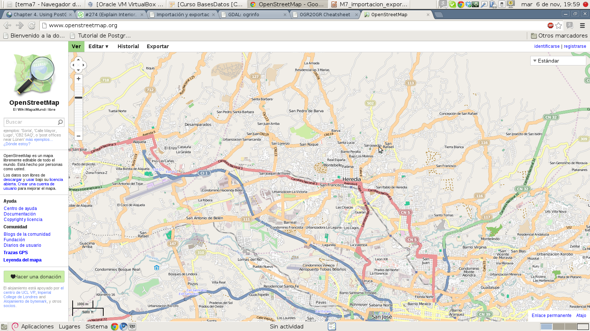

Importación y exportación de datos
Objetivos
Conocer las herramientas de importación y exportación de las que dispone PosGIS
shp2pgsql
pgsql2shp
shp2pgsql-gui
ogrinfo
ogr2ogr
osm2psql
Importar datos desde shape a PostGIS y exportar esos datos.
Importar datos OSM
Importar datos mediante ogr
QGIS
shp2pgsql
Convierte archivos ESRI Shape en SQL preparado para la inserción en la base de datos
shp2psql
$ shp2pgsql [<opciones>] <ruta_shapefile> [<esquema>.]<tabla>
COMANDOS
-s <srid> Asigna el sistema de coordenadas. Por defecto será -1
(-d|a|c|p)
-d Elimina la tabla, la recrea y la llena con los datos del shape
-a Llena la tabla con los datos del shape. Debe tener el mismo esquema exactamente
-c Crea una nueva tabla y la llena con los datos. opción por defecto.
-p Modo preparar, solo crea la tabla
-g <geocolumn> Especifica el nombre de la columna geometría (usada habitualmente en modo -a)
-D Usa el formato Dump de postgresql
-G Usa tipo geografía, requiere datos de longitud y latitud
-k Guarda los identificadores en postgresql
mas comandos
-i Usa int4 para todos los campos integer del dbf
-I Crea un índice spacial en la columna de la geometría
-S Genera geometrías simples en vez de geometrías MULTI
-w Salida en WKT
-W <encoding> Especifica la codificación de los caracteres. (por defecto : “WINDOWS-1252”)
-N <policy> estrategia de manejo de geometrías NULL (insert*,skip,abort).
-n Solo importa el archivo DBF
-? Muestra la ayuda
pgsql2shp
Con ella podremos convertir los datos de nuestra base de datos en archivos ESRI Shape
pgsql2shp
$ pgsql2shp [<opciones>] <basedatos> [<esquema>.]<tabla>
$ pgsql2shp [<opciones>] <basedatos> <consulta>
comandos
-f <nombrearchivo> Especifica el nombre del archivo a crear
-h <host> Indica el servidor donde realizará la conexión
-p <puerto> Permite indicar el puerto de la base de datos
-P <password> Contraseña
-u <user> Usuario
-g <geometry_column> Columna de geometría que será exportada
shp2pgsql-gui
$ shp2pgsql-gui
GDAL/OGR
GDAL/OGR es una librería de lectura y escritura de formatos geoespaciales, tanto Raster con GDAL como Vectorial con OGR. Se trata de una librería de software libre ampliamente utilizada.
ogrinfo
ogrinfo obtiene información de los datos vectoriales. Podremos utilizar esta herramienta para la obtención de esta información de las tablas que tenemos almacenadas en la base de datos
ogrinfo
$ ogrinfo [<opciones>] <ruta fuente datos>
comandos
-where muestra los datos de las filas que cumplan la clausula
-sql filtra la información mediante consultas SQL
-geom={YES/NO/SUMMARY} modifica la visualización de la información de la columna geométrica
ogr2ogr
OGR es capaz de convertir a PostGIS todos los formatos que maneja, y será capaz de exportar desde PostGIS todos aquellos en los que tiene permitida la escritura.
ogr2ogr
$ ogr2ogr -formats
ogr2ogr
En la página principal de GDAL podremos encontrar un listado de todas las opciones que nos permite manejar el comando. Detallamos a continuación algunas de las principales:
-select <lista de campos> lista separada por comas que indica la lista de campos de la capa de origen que se quiere exportar
-where <condición> consulta a los datos de origen
-sql posibilidad de insertar una consulta más compleja
ogr2ogr
Otras opciones en referencia al formato de destino (las anteriores hacían referencia al de origen):
-f <driver ogr> formato del fichero de salida
-lco VARIABLE=VALOR Variables propias del driver de salida
-a_srs <srid> asigna el SRID especificado a la capa de salida
-t_srs <srid> Reproyecta la capa de salida según el SRID especificado
OSM
OpenStreetMap (también conocido como OSM) es un proyecto colaborativo para crear mapas libres y editables.
Los mapas se crean utilizando información geográfica capturada con dispositivos GPS móviles, ortofotografías y otras fuentes libres. Esta cartografía, tanto las imágenes creadas como los datos vectoriales almacenados en su base de datos, se distribuye bajo licencia abierta Open Database Licence (ODbL).
OSM

OSM
Diferente relaciones entre los datos:
Node: simplemente un punto
Way: una lista ordenada entre 2 y 20000 nodes area = yes
Relation: lista ordenada de nodes o ways relaciondos entre ellos
a diferencia de las geometrías características como:
Punto, Linea, Polígono
osm
Una característica particular es la ausencia de polígonos dentro del modelo, estos se realizan mediante la asignación de una relación a una linea cerrada. Esta particularidad no impide que los datos de OSM puedan ser adaptados al modelo de geometrías normal mediante cargadores de datos OSM.
osm2pgsql
No mantiene las relaciones entre las way y nodes, solo dibuja la linea como una MultiLinestring
osm2pgsql
Mediante el uso de este programa podremos incorporar en nuestra base de datos los datos obtenidos desde OSM. Una vez que hemos realizado la importación, aparecerán en nuestra base de datos las tablas que serán el resultado de esta importación:
planet_osm_point
planet_osm_line
planet_osm_polygon
planet_osm_roads
osm2pgsql
$ osm2pgsql [opciones] ruta_fichero.osm otro_fichero.osm
$ osm2pgsql [opciones] ruta_planet.[gz, bz2]
comandos
-H Servidor PostGIS
-P <puerto> Puerto
-U <usuario> Usuario
-W pregunta la password del usuario
-d <base_de_datos> base de datos de destino
-a añade datos a las tablas importadas anteriormente
-l almacena las coordenadas en latitud/longitug en lugar de Spherical Mercator
-s utiliza tablas secundarias para la importación en lugar de hacerlo en memoria
-S <fichero_de_estilos> ruta al fichero que indica las etiquetas de OSM que se quiere importar
-v modo verborrea, muestra la salida de las operaciones por consola
osmosis
osmosis [opciones] file=ruta al fichero osm –write-pgsql database=nombre base de datos user=usuario password=contraseña
osmosis
user <usuario> usuario
host <host> servidor
password <contraseña>
database <base de datos>
--write-pgsql Exporta los resultados a PostGIS
--truncate-pgsql Elimina los registros de todas las tablas de osmosis
--read-pgsql Lee datos osmosis en PostGIS
--read-xml Establece como origen el formato xml de OSM